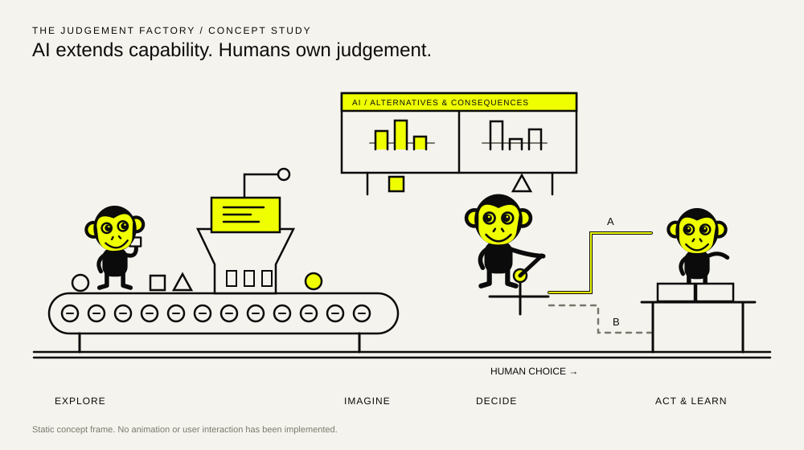
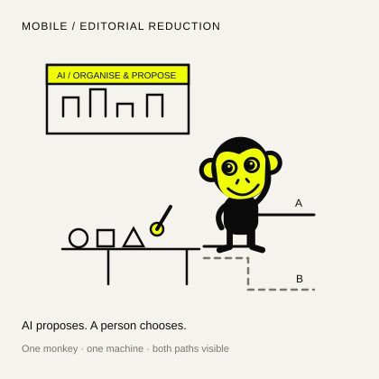
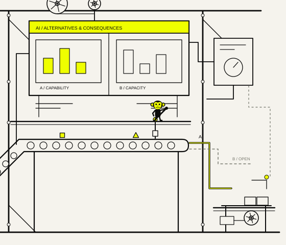

Side-by-side overview.
These two images scale to fit your browser. Use the fixed-size rows below for display-size judgement. On narrow screens this overview stacks; the fixed mobile row stays side by side.
Original / tallest worker ≈11.4% of scene width

Revised / workers 4% of scene width

Actual desktop display sizes.
Each panel below is a fixed 1440 CSS pixels wide, with a 1320px illustration. They intentionally do not shrink. Scroll horizontally to inspect the two panels at 100% browser zoom, or open either SVG separately. The combined row is wider than a typical display.
Original / 1440px viewport / 1320px scene
Revised / 1440px viewport / 1320px scene
Actual mobile display sizes.
Two fixed 375 CSS pixel panels, each with a 335px illustration. These remain side by side and scroll on a phone. Control boxes show proposed placement only; they are not working buttons.
Original / 375px viewport

Revised / 375px viewport

Scale decision.
| Measure | Original | Revised |
|---|---|---|
| Worker height / desktop scene width | ≈11.4% central worker | 4% |
| Worker at a 1320px scene width | ≈151px | ≈53px |
| Worker in the 375px mobile specimen | ≈100px | ≈24px |
| Movement vocabulary | Ten expressive states | Five task actions |
| Visual subject | Characters and apparatus | Machinery and connected work |
The original SVG drawings remain unchanged under original/. Character metrics describe vector geometry at the stated CSS widths; they are not measurements of physical screen size.